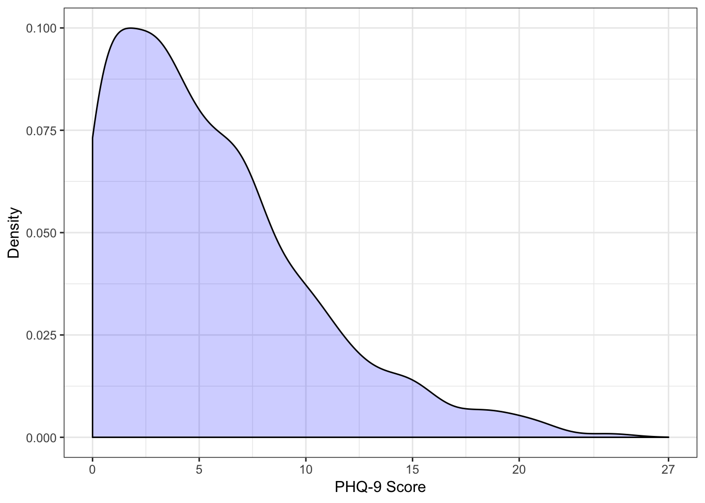
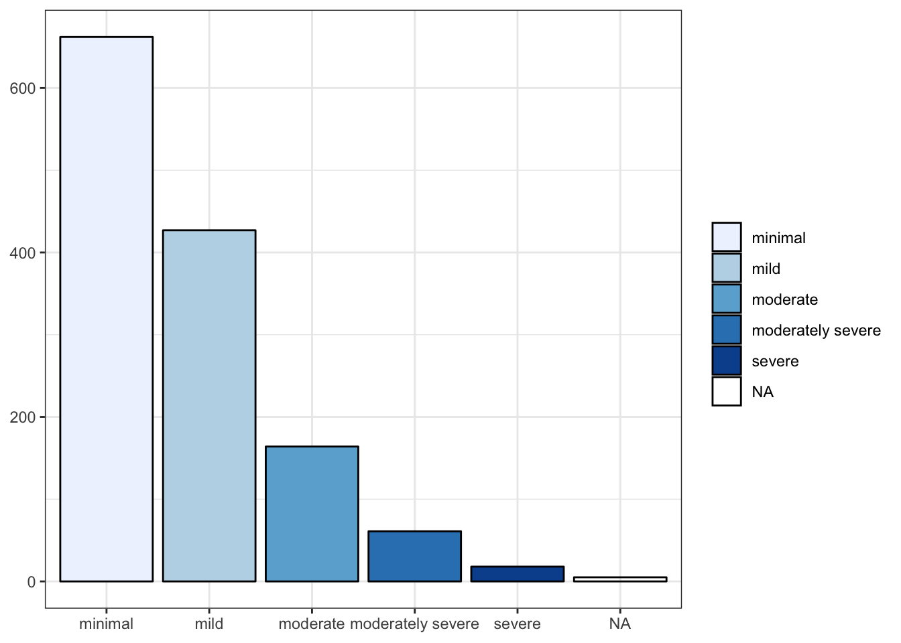

转载自这里
PHQ-9是患者健康问卷的九项抑郁症模块。每个项目以4点李克特量表评分，范围从0（根本不是）到3（几乎每天）。将这些项目相加以获得0到27的总分，分数越高表示抑郁症的严重程度越大。根据总分，可以用0-4,5-9,10-14,15-19和20-27点评估不同严重程度，表明“最小”，“轻度”，“中度”，“中度严重” “和”严重的“抑郁症。
PHQ-9问卷可在以下链接中找到。
在这篇博文中，我展示了如何计算PHQ-9得分和PHQ-9严重等级。
我们将要使用的数据集发布在Plos One中。 该文件具有数字对象标识符（doi），可以使用包的read_delim()功能导入到R中readr。
library(readr)
library(dplyr)##
## Attaching package: 'dplyr'## The following objects are masked from 'package:stats':
##
## filter, lag## The following objects are masked from 'package:base':
##
## intersect, setdiff, setequal, unionlibrary(ggplot2)
df.phq9 <- readr::read_delim("https://doi.org/10.1371/journal.pone.0156167.s001",
delim = ";",
escape_double = FALSE,
trim_ws = TRUE) %>%
select(starts_with('phq9'))## Parsed with column specification:
## cols(
## .default = col_integer(),
## EQ5D_sum = col_character()
## )## See spec(...) for full column specifications.glimpse(df.phq9)## Observations: 1,337
## Variables: 9
## $ phq9_1 <int> 1, 3, 2, 0, 0, 0, 1, 0, 0, 2, 1, 1, 0, 3, 0, 0, 0, 2, 0...
## $ phq9_2 <int> 0, 1, 1, 1, 1, 0, 0, 0, 1, 0, 0, 0, 0, 1, 0, 0, 0, 0, 0...
## $ phq9_3 <int> 3, 2, 2, 2, 1, 0, 1, 3, 1, 0, 1, 1, 0, 3, 1, 0, 0, 0, 0...
## $ phq9_4 <int> 1, 1, 1, 1, 1, 1, 1, 1, 0, 2, 1, 3, 0, 1, 0, 0, 0, 1, 0...
## $ phq9_5 <int> 1, 1, 0, 1, 0, 0, 0, 0, 1, 0, 1, 2, 0, 1, 0, 0, 0, 0, 0...
## $ phq9_6 <int> 1, 0, 0, 1, 0, 0, 0, 0, 0, 0, 1, 0, 0, 0, 0, 0, 0, 0, 0...
## $ phq9_7 <int> 0, 1, 1, 1, 0, 1, 0, 0, 0, 3, 1, 1, 0, 1, 0, 0, 0, 0, 0...
## $ phq9_8 <int> 0, 1, 0, 1, 0, 0, 0, 0, 0, 0, 1, 0, 0, 1, 0, 0, 0, 0, 0...
## $ phq9_9 <int> 0, 0, 0, 1, 0, 0, 0, 0, 2, 0, 0, 0, 0, 0, 0, 0, 0, 0, 0...该scoring_phq9函数需要一个包含PHQ-9项（数据）的数据框和一个包含项’names（items.phq9）的向量作为输入参数。
scoring_phq9 <- function(data, items.phq9) {
data %>%
mutate(nvalid.phq9 = rowSums(!is.na(select(., items.phq9))),
nvalid.phq9 = as.integer(nvalid.phq9),
mean.temp = rowSums(select(., items.phq9), na.rm = TRUE)/nvalid.phq9,
phq.01.temp = as.integer(unlist(data[items.phq9[1]])),
phq.02.temp = as.integer(unlist(data[items.phq9[2]])),
phq.03.temp = as.integer(unlist(data[items.phq9[3]])),
phq.04.temp = as.integer(unlist(data[items.phq9[4]])),
phq.05.temp = as.integer(unlist(data[items.phq9[5]])),
phq.06.temp = as.integer(unlist(data[items.phq9[6]])),
phq.07.temp = as.integer(unlist(data[items.phq9[7]])),
phq.08.temp = as.integer(unlist(data[items.phq9[8]])),
phq.09.temp = as.integer(unlist(data[items.phq9[9]]))) %>%
mutate_at(vars(phq.01.temp:phq.09.temp),
funs(ifelse(is.na(.), round(mean.temp), .))) %>%
mutate(score.temp = rowSums(select(., phq.01.temp:phq.09.temp), na.rm = TRUE),
score.phq9 = ifelse(nvalid.phq9 >= 7, as.integer(round(score.temp)), NA),
cutoff.phq9 = case_when(
score.phq9 >= 20 ~ 'severe',
score.phq9 >= 15 ~ 'moderately severe',
score.phq9 >= 10 ~ 'moderate',
score.phq9 >= 5 ~ 'mild',
score.phq9 < 5 ~ 'minimal'),
cutoff.phq9 = factor(cutoff.phq9,
levels = c('minimal', 'mild','moderate', 'moderately severe', 'severe'))) %>%
select(-ends_with("temp"))
}该函数将三个变量添加到原始数据框：
items.phq9 <- paste0('phq9_', seq(1, 9, 1))
df.phq9 <- df.phq9 %>%
scoring_phq9(., items.phq9)
glimpse(df.phq9)## Observations: 1,337
## Variables: 12
## $ phq9_1 <int> 1, 3, 2, 0, 0, 0, 1, 0, 0, 2, 1, 1, 0, 3, 0, 0, 0,...
## $ phq9_2 <int> 0, 1, 1, 1, 1, 0, 0, 0, 1, 0, 0, 0, 0, 1, 0, 0, 0,...
## $ phq9_3 <int> 3, 2, 2, 2, 1, 0, 1, 3, 1, 0, 1, 1, 0, 3, 1, 0, 0,...
## $ phq9_4 <int> 1, 1, 1, 1, 1, 1, 1, 1, 0, 2, 1, 3, 0, 1, 0, 0, 0,...
## $ phq9_5 <int> 1, 1, 0, 1, 0, 0, 0, 0, 1, 0, 1, 2, 0, 1, 0, 0, 0,...
## $ phq9_6 <int> 1, 0, 0, 1, 0, 0, 0, 0, 0, 0, 1, 0, 0, 0, 0, 0, 0,...
## $ phq9_7 <int> 0, 1, 1, 1, 0, 1, 0, 0, 0, 3, 1, 1, 0, 1, 0, 0, 0,...
## $ phq9_8 <int> 0, 1, 0, 1, 0, 0, 0, 0, 0, 0, 1, 0, 0, 1, 0, 0, 0,...
## $ phq9_9 <int> 0, 0, 0, 1, 0, 0, 0, 0, 2, 0, 0, 0, 0, 0, 0, 0, 0,...
## $ nvalid.phq9 <int> 9, 9, 9, 9, 9, 9, 9, 9, 9, 9, 9, 9, 9, 9, 9, 9, 9,...
## $ score.phq9 <int> 7, 10, 7, 9, 3, 2, 3, 4, 5, 7, 7, 8, 0, 11, 1, 0, ...
## $ cutoff.phq9 <fct> mild, moderate, mild, mild, minimal, minimal, mini...ggplot(df.phq9, aes(score.phq9)) +
geom_density(fill = 'blue', alpha = 0.2) +
scale_x_continuous(limits = c(0, 27), breaks = c(0,5,10,15,20,27)) +
labs(x = 'PHQ-9 Score', y = 'Density') +
theme_bw()## Warning: Removed 5 rows containing non-finite values (stat_density).
ggplot(df.phq9, aes(x = cutoff.phq9, fill = cutoff.phq9)) +
geom_bar(colour = 'black') +
scale_fill_brewer(type = 'seq') +
labs(x = NULL, y = NULL, fill = NULL) +
theme_bw()